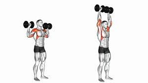
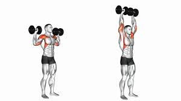
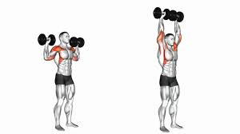

Bu haraketin adı military press. Bu haraket omuzlar için birebirdir. Dumbell türevleri de yapılabilir, buna siz karar verin.
Bu haraketin ismi Bench press bu haraket göğüs kaslarını büyütmek için çok önemli bir harakettir ve kesinlikle her antreman programında bir türevi bulunmalı
Bu aletin adı butterflydır. Bu haraket, güzel bir bench press sonrası göğüslerinizi şişirecektir.

Bu haraketin adı military press. Bu haraket omuzlar için birebirdir. Dumbell türevleri de yapılabilir, buna siz karar verin.


Bu haraket bir itiş haraketi. Bench press veya military press sonrası omuzlarınızı hissederek çok ağır kilolara gerek olmadan yana açarak yapacağınız bir harakettir. ÖNEMLİ!!!: İlk fotoğraftaki omuzun yan kısmını hedef alırken diğeri omuzun arka kısmını hedef alır. Aynı gün çalışılabilir ama tavsiyem ön omuzu bir bench press veya military press sonrası, arka omuzu ise çekiş günü ile beraber çalışmanız.

Bu haraket ise arka kolu izole bir şekilde çalıştıran cable push down haraketidir. Bir itiş günü sonrası en son yapılabilecek mükemmel bir izole harakettir. İsterseniz aparata halat veya türevlerini takabilirsiniz.
Bu haraket bir arka kol haraketidir. Bu sefer serbest bar ile arka kolu mükemmel hedef alan bir harakettir.

Bu haraket serbest bar ile yapılan bir çekiş haraketidir. Burada önemli olan güçtür. Bu haraket kesinlikle çok önemlidir ve sırt günü için dumbell veya makine türevleri yapılabilir.

Bu haraketin adı lat pull down. Tutuşlarına göre hedef sırt kas grupları değişebilir. Biz düz tutuşu baz alarak kanat ve sırtı etkili bir şekilde çalıştırır.
Bu haraket izole bir harakettir ve çok ağır olmasına gerek yoktur. Önemli olan sırtı esneterek kanatlarınızı hissederek kendinize çekmektir.

Bu haraket ise sırt sonrası gerilen bicepsleri şekillendirmek için yapılan bir harakettir. Dumbell veya makine türevleri yapılabilir.

Bu haraket (deadlift) hem sırt alt sırt kaslarını hem de arka bacağı çalıştırır. Yapılma şekli ile çok iyi derecede kuvvet kazandırır. Önemli bir harakettir.

Bu haraketin adı squattır. Bacak günü için en önemli kuvvet haraketlerindendir. Makine veya dumbell türevleri tercih edebilirsiniz.

Bu haraket (leg press) squat yerine veya squat sonrası yapılabilecek bir harakettir.

Bu haraket (leg extension) squat veya leg press sonrası yapılabilecek izole ön bacak haraketidir.

Bu haraket (leg curl) bir deadlift veya squat sonrası yapılabilecek izole bir arka bacak haraketidir. Dumbell türevleri de bulunur.

Bu haraket calflarınızı geliştirecek bir harakettir. Aşağı doğru esneterek yukarı patlayarak güzel bir hissiyat alırsınız.